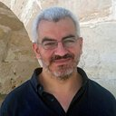

Dr. Bassem Mokhtar
Bassem Mokhtar has been an Assistant Professor of Computer Engineering at the College of Information Technology, United Arab Emirates University, Al Ain, UAE, since January 2023. He received his Ph.D. in Computer Engineering from Virginia Tech, USA, in 2014, and his B.Sc. and M.Sc. in Electrical Engineering from Alexandria University, Egypt, in 2004 and 2008. He is a senior member of IEEE. His research interests include embedding intelligence in networking operations, autonomic resilient networking, network semantics reasoning, and machine learning applications in computer networks. He has served as PI, Co-PI, and researcher on funded multidisciplinary projects spanning the Internet of Things, Internet of Vehicles, Software Defined Networking, sensor networks, nanotechnology, and flexible electronics, and reviews for venues including the IEEE Internet of Things Journal, IEEE Vehicular Technology Magazine, and the Elsevier Journal of Network and Computer Applications.

Eng. Basmala Taha
B.Sc. in Computer Science, Egypt-Japan University of Science and Technology (E-JUST), 2022–2026. Author of 3 peer-reviewed publications across IIoT anomaly detection, sequence alignment, and ensemble learning. Joined INet Lab in July 2026 to lead the Digital Twin–Driven Safe Exploration research track, and is currently applying to Master's/Ph.D. programs.
Dr. Asmaa Ibrahim
College of Information Technology, UAE University.
Dr. Ghada Afifi
College of Information Technology, UAE University.
Eng. Abdelrhman Walid
Faculty of Engineering, Helwan University, Egypt.
Eng. Yahia Ibrahim
Faculty of Engineering, Alexandria University, Egypt.

Eng. Aya Ahmed
American University in Cairo, Egypt. Supports research design, methodology development, technical writing, and system architecture formulation.

RZ'">Dr. Rami Zewail
Faculty of Engineering, Egypt-Japan University of Science and Technology (E-JUST), Egypt.